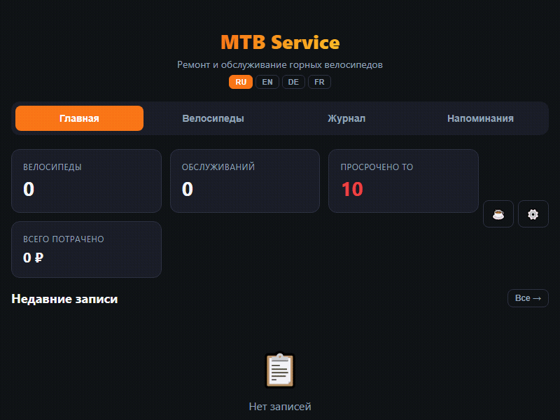

Ремонт и обслуживание горных велосипедов. Учитывай пробег, компоненты и запчасти — полностью офлайн.
MTB Service помогает не пропустить обслуживание и вести полную историю ремонта.
Добавляй неограниченное количество байков — бренд, модель, рама, цвет, серийный номер. Вся информация в одном месте.
Отслеживай установленные компоненты с датой и пробегом. Знай, когда что было заменено.
Полная история ремонтов: дата, пробег, тип работ, описание, использованные запчасти и стоимость.
12 встроенных регламентов (цепь, тормоза, вилка, амортизаторы). Срабатывают по пробегу или дням.
Экспортируй данные в JSON или целиком базу данных. Переноси между устройствами или храни резервные копии.
Все данные хранятся локально — никакого интернета не нужно. Интерфейс на русском, английском, немецком и французском.
Минималистичный тёмный интерфейс, оптимизированный для работы одной рукой.

Последняя версия доступна для Windows и Android. Установка займёт меньше минуты.
Автономный .exe-файл. Просто скачай и запусти — никаких установок.
⬇ Скачать .exeНативный APK через WebView. Полностью офлайн, как и десктопная версия.
⬇ Скачать .apkMTB Service — бесплатный open-source проект. Если он помогает тебе, поддержи разработку донатом.
Да, полностью бесплатно и без ограничений. Никаких подписок, рекламы или платных функций. Исходный код открыт под лицензией MIT — вы можете сами убедиться.
Нет. Все данные хранятся локально на вашем устройстве в SQLite. Интернет нужен только для скачивания приложения.
Используйте экспорт в JSON или DB (в меню настроек). Затем импортируйте файл на другом устройстве. Можно делать резервные копии в облако или на компьютер.
Русский, английский, немецкий и французский. Переключение происходит мгновенно без перезагрузки.
Скачайте APK из GitHub Releases. Перед установкой разрешите установку из неизвестных источников в настройках телефона. Это стандартная процедура для приложений не из Play Market.